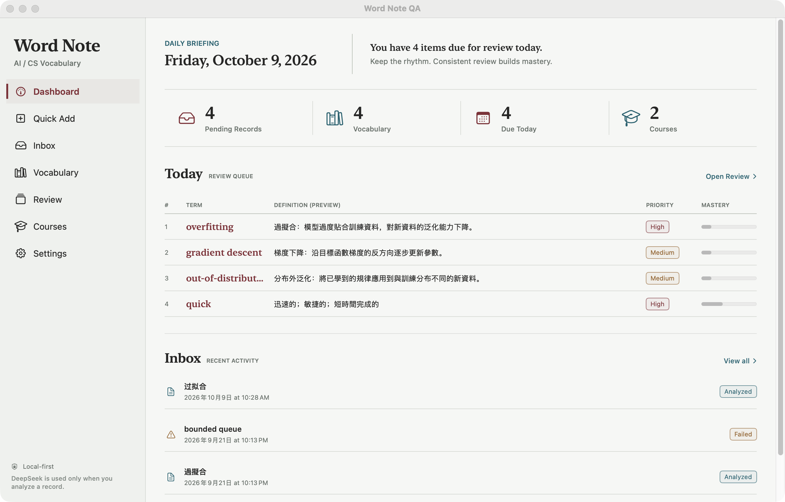
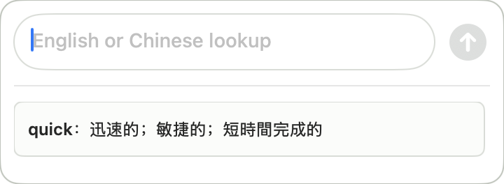
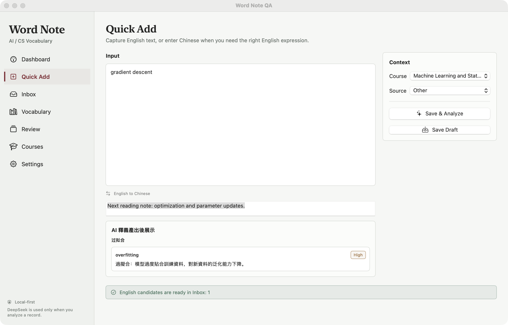
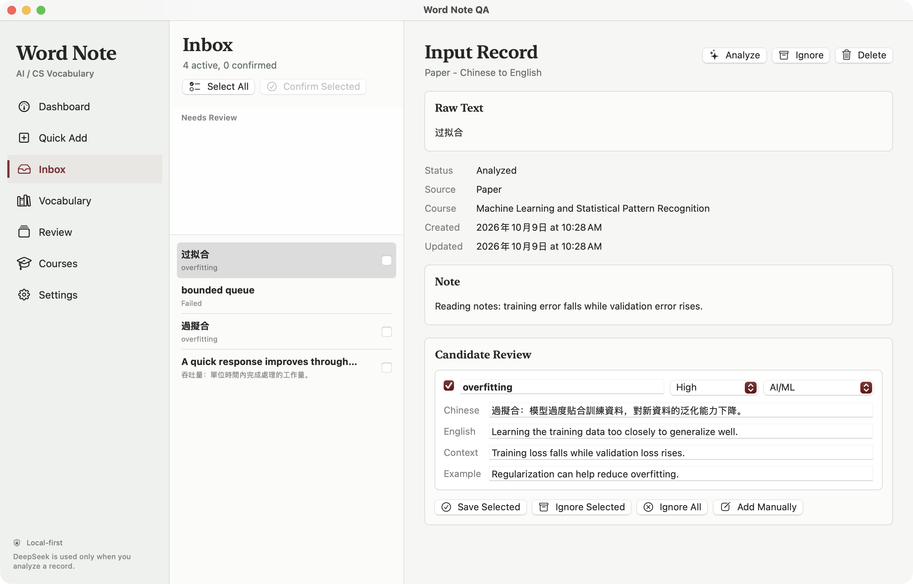
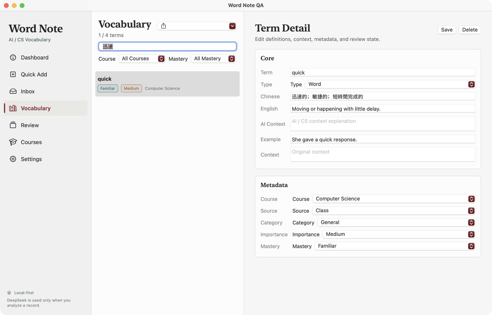
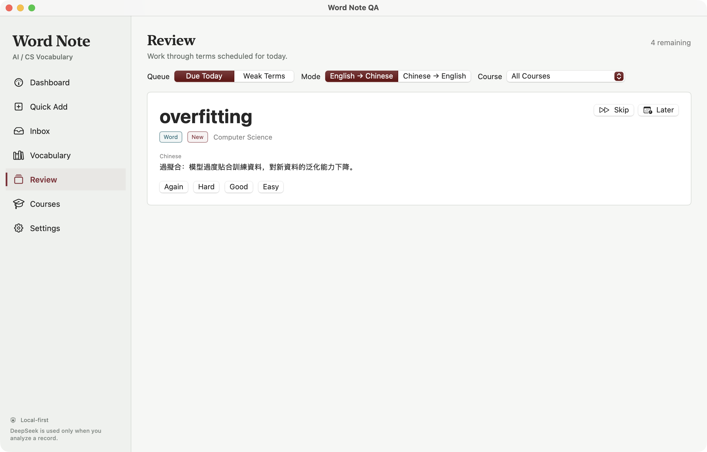

Work / macOS · SwiftUI · AI Vocabulary
Word Note
I wanted to keep the words I encounter in English-language courses and reading in a notebook of my own, with their meanings, original context and next review connected.
- Product design & native app development
- Local app · In development
- SwiftUI / AppKit / SwiftData
- No. 06

Capture it, then keep reading
These six screenshots were captured on October 9, 2026, in WordNoteQA, an isolated demo build of the regular V1 interface. They use demo vocabulary and offline preset AI responses, not personal study records. They do not demonstrate live model quality or completed acceptance of newer features. The original windows and mixed English/Chinese UI text are preserved. Click an image to view the original.
Word Note began with a small frustration while moving between English-language courses, papers and technical reading. I would look up a word, understand it, and meet it again days later with only a vague memory of having checked it. Rather than start from a fixed vocabulary list, I wanted to keep the expressions I actually encountered and why they appeared on that page.
I kept the capture step light. The main window has room for a course, source and note; the menu bar opens a small floating panel. Enter the text, save it to the analysis queue and return to reading. An exact match for an English entry already in the notebook reuses its local meaning and brings it into the review queue, without another model request for the same word.
The input need not start in English. If I remember only the Chinese term for overfitting, I can use it to find the English expression. The result still enters the workflow as an English candidate. The previous result stays available while I type the next item, instead of keeping me in a waiting conversation.

Let the meaning wait in Inbox
I do not let AI output go straight into the confirmed vocabulary. The original input, course and note stay in Inbox, beside the candidate's Chinese meaning, English definition, context and example. I check or edit it before saving. That pause matters for technical and ambiguous terms: a fluent explanation may not fit what I am reading.
I also keep the explanation requirements simple: explain the word itself first, and add a specialist meaning only when it is genuinely different. An ordinary word such as quick does not need an artificial AI context. If none of the candidates fits, I can create an entry manually. Failed analyses keep the original input for a later retry.

Find it from the meaning you remember
Keeping a term is useful only if I can find it again. Each entry retains its English headword, Chinese meaning, English definition and example, with the course and source alongside them. Vocabulary can be filtered by course and mastery, so returning to a class does not mean searching through every reading note.
Sometimes the spelling is exactly what I have forgotten. Search therefore covers Chinese meanings and handles both simplified and traditional characters. Searching for the Chinese meaning of quick brings the entry back. This is local text search, not another model guess, and it does not rewrite the saved text.

Leave room to recall
The review screen hides the answer at first. I can start with terms due today or weaker terms, narrow the queue by course, then recall Chinese from English or English from Chinese. Recognizing an explanation on sight is not quite the same as retrieving it myself.
After revealing the answer, I choose Again, Hard, Good or Easy to schedule the next review. AI does not decide that I have mastered it. A term I want to leave for now can move to the end of the session or to tomorrow. This is the existing review flow; independent schedules for each direction and resumable sessions are still being validated in the newer version, not demonstrated by these screenshots.

The engineering behind a small window
Most of the time, this tool should sit quietly beside my reading, so I chose native macOS. SwiftUI organizes the main interface, AppKit handles the floating panel and input completion, and SwiftData stores vocabulary and learning records. Appearance can follow the system or use a separate light or charcoal-dark theme, consistently across the main window and panel.
- 01 / INPUT
Save the input first
A new query becomes a local record before entering the analysis queue, rather than existing only inside a request.
- 02 / ANALYSIS
Generate candidates
Parse the structured response, validate the English entry and meaning, then send the candidates to Inbox for checking.
- 03 / VOCABULARY
Confirm before learning
Search and review use the confirmed vocabulary, stored separately from unconfirmed analysis results.
I separated queued analysis from the views, with one queue shared by the main window and floating panel. New input is saved first, one failed item does not block later items, and unfinished records can be recovered when the app reopens. Search, completion, lookup direction and review rules live in WordNoteCore. A replaceable AI client lets me check the workflow with preset responses instead of paid calls.

Where it stands
Word Note is currently a local Mac application built from source, with no downloadable installer, accounts or cloud sync. Existing entries can be browsed, searched and reviewed offline. Generating new meanings requires a connection and your own DeepSeek API key; provider charges apply.
Local-first does not mean nothing leaves the device. When I request an analysis, that input and its relevant course name, source and note are sent to DeepSeek, but not the entire vocabulary as context. The key is kept in a permission-restricted local plaintext environment file, not an encrypted vault. I want those limits to be explicit rather than covered by a vague privacy promise.
Next, I care most about reliability over time: protecting manual edits during organization, making backup and restore previews clear, and continuing an interrupted review. These newer features have implementations and tests, but some integration and on-device acceptance checks remain. I want to settle those everyday details before expanding the scope.